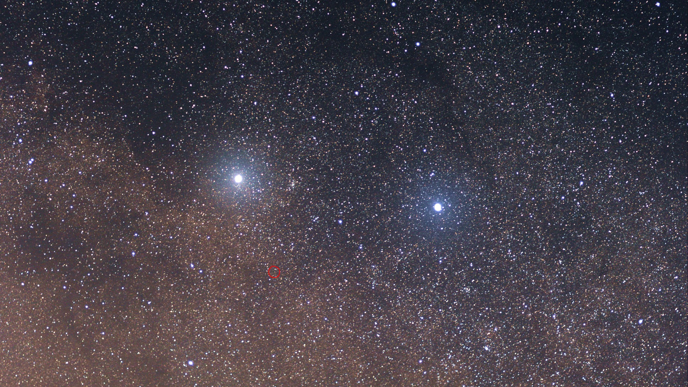

The Stars
Learn about the brightest stars in the night sky.
.jpg)
Sirius
Sirius, also known as the Dog Star (represents the collar of the Dog, Canis Major), Sirius is seriously the brightest star in the sky, twice as bright as the second brightest star (Canopus). It is part of the constellation Canis Major.
According to ancient Egyptian and Greek mythology, Sirius was believed to mark the beginning of the summer season. In the summer, Sirius rises first in the Sky, signaling the start of the "dog days" (hot days) of summer. Sirius is a binary star system consisting of a main-sequence star (Sirius A) and a faint white dwarf (Sirius B) located at the distance of approx 8.6 light-years, its brightness can be attributed to its proximity from earth (Sirius will be brightest star in the night sky for approx the next 210,000 years, after which Vega will become the brightest star).
.jpg)
Canopus
Canopus is the second brightest star in the night sky and is located in the constellation Carina (approx 310 light-years away from Earth). It
is a supergiant star (It is one of the most luminous stars in the sky, emitting 10,700 times more light than the Sun), it has exhausted its hydrogen fuel and expanded to become much larger than the sun. Canopus is a circumpolar star, meaning it never sets below horizon, it is always visible in the sky (but it's not visible from northen latitute, north to 37° 18'N) and this makes it a valuable star for navigation and is often used as a guide star for spacecraft navigation.

Alpha Centauri
Alpha Centauri is the closest star system to the Solar System, located just 4.37 light-years away. It is a triple star system consists of three stars: Alpha Centauri A (A yellow-orange dwarf similar to the Sun, with a mass of about 1.1 times of the Sun), Alpha Centauri B (An orange dwarf star, slightly smaller and cooler than Sun, with a mass of about 0.9 times of the Sun), and Proxima Centauri (A small, cool red dwarf star, with a mass of about 0.12 times that of the Sun, Proxima Centauri is the closest star to the Sun, at a distance of about 4.24 light-years) Proxima Centauri has three known exoplanets, including Proxima b, a potentially habitable planet with a mass similar to that of Earth.
Arcturus
Arcturus is the brightest star in the constellation Boötes (the Herdsman) and the fourth brightest star in the night
sky. It is a red giant star located about 37 light-years from Earth. It has exhausted its hydrogen fuel and expanded to become much larger than it was in its main-sequence phase, it is expected to become a white dwarf in the future. The stars brightness is due to its large size and relatively cool surface temperature. Arcturus is often used as a reference point to locate other stars and celestial objects. To find Arcturus follow the arc of the handle of the Big Dipper, Use the Phrase "Follow the arc to the Arcturus and then speed on to Spica".